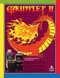

Marca cada prueba al hacerla. Se guarda en este móvil. Al acabar, pulsa Enviar resultados y pégamelos.
0 de 65 hechas
Del sistema
S1
Botones de la recreativa
En FBA el B es el Botón 1, el A el Botón 2 y el R el Botón 3 (en los juegos de tres botones). Los de lucha (Street Fighter…) llevan los puñetazos arriba (Y X L) y las patadas abajo (B A R). Coin mete una moneda y 1P / 2P empiezan.
Bien si: en cualquier juego, Coin da crédito, 1P empieza y Coin + ESC sale del juego.
S2
Jugador 2
En los juegos a dos jugadores, el J2 usa su mitad del panel; en los de turnos, juega con sus mandos cuando le toca (salvo Legend of Hero Tonma, Ninja Spirit y R-Type, donde el J2 juega con los del J1).
Bien si: en un juego a la vez (por ejemplo Teenage Mutant Ninja Turtles) los dos se mueven cada uno con su joystick, y en uno por turnos (por ejemplo Rastan) el J2 controla su turno.
Juegos (63)
1

Gauntlet II
con la segunda bartop conectada por USB, que su panel sea el J3 (entra con su Coin) y el J4 (entra con su 2P), con los mismos botones que aquí.
si se puede jugar apuntando con el joystick (la recreativa tenía pistola) y qué hace A. Según las guías, en los cruces de vía se elige el camino disparando a las señales.
que B lance el arcoíris y A salte (⚠️ según las guías). ¿Juegan a la vez o por turnos? Si es por turnos, que el J2 use sus mandos. Según las guías: B lanza el arcoíris y A salta (mantenerlo: más alto, y se puede pisar un arcoíris sin tirarlo).
qué hacen B y A (seguramente atacar y saltar). ¿El J2 juega en su turno con sus mandos? Según las guías: un botón ataca y otro salta; con el joystick se elige la altura del salto y hacia dónde va el golpe (también hacia abajo en el aire).
que B dispare (de cerca, puñetazo) y A salte. Arriba + B dispara hacia arriba. ¿Hacen algo Y, X y L? ¿El J2 juega a la vez o por turnos? Según las guías solo hay dos botones (disparar o dar puñetazos, y saltar): seguramente Y, X y L no hacen nada.
que B lance el escudo (Diskarmor) y A salte, y que el J2 juegue en su turno con sus mandos. Según las guías: abajo + B lanza el escudo a ras de suelo y arriba + B, por encima; saltar sobre un enemigo lo aturde.
que B ataque (estrellas ninja; de cerca, espada), A salte y R haga la magia ninja. ¿El J2 juega en su turno con sus mandos? Según las guías: agachado (abajo) + B suelta al perro contra el enemigo al que ladra.
que B ataque (estrellas ninja; de cerca, golpe), A salte (arriba + A sube de piso, abajo + A baja) y R haga la magia ninja (una vez por fase). ¿El J2 juega en su turno con sus mandos?
qué hacen B, A y R: seguramente disparar a la izquierda, disparar a la derecha y elegir la mejora (como en Gradius). Según las guías: dos botones disparan, uno a cada lado, y el tercero cambia de arma.
qué hacen B, A y R (seguramente disparar, saltar y una patada o arma). ¿El J2 juega a la vez o por turnos? Según las guías hay disparo, salto y patadas (alta, baja y en salto); sin munición, el agente pelea a patadas.
que B lance nieve (y empuje la bola de nieve) y A salte. ¿Hace algo R? Que los dos jugadores jueguen a la vez. Según las guías solo hay dos botones (lanzar nieve y saltar): seguramente R no hace nada.
que B dispare y A salte, y que los dos jugadores jueguen a la vez. Según las guías: B dispara (en 8 direcciones) y A salta; arriba o abajo + A cambia de piso y abajo en diagonal + A se desliza.
que B acelere a Pac-Man cuando está en modo «super». ¿El J2 juega en su turno con sus mandos? Según las guías, B («Super Speed») solo sirve con Pac-Man en tamaño super, y mientras se mantiene va mucho más rápido.
Botones
Correr más rápido (en modo «super») (⚠️ confirmar)
qué hacen B y A (puñetazo o disparo, y saltar o volar). Que los dos jugadores jueguen a la vez. Según las guías: mantener el botón de puñetazo y soltarlo lanza la «onda sónica»; en las fases de disparo, Superman usa la visión calorífica.
que B ataque y A salte, y que B + A haga el ataque especial. Los dos jugadores a la vez. Según las guías: B ataca y A salta; los dos a la vez hacen el ataque especial, y saltar y atacar en lo alto da una patada en salto.
que B ataque y A salte, y que B + A haga el ataque especial. Los dos jugadores a la vez. Según las guías hay un botón de atacar y otro de saltar; los dos a la vez hacen el ataque especial.
que B gire la pieza. ¿Hace algo A? Que los dos jugadores jueguen a la vez. Según StrategyWiki, en esta versión las piezas solo giran en un sentido (contrario a las agujas del reloj).
que B ataque, A salte y R haga la magia. Según las guías: un botón ataca (sin atacar, el hacha se carga y se enciende), otro salta y el tercero lanza el rayo, que necesita al menos una punta de flecha azul.
que B ataque y A salte, y que B + A haga el ataque especial. Según las guías, B + A lanza la magia (gasta vida) y, con guerrero, clérigo o enano, atrás justo antes del golpe para con el escudo.
qué hacen B y A (atacar con la espada y saltar, o cubrirse con el escudo). ¿El J2 juega en su turno con sus mandos? Según las guías: un botón da con la espada y el otro sube el escudo (sin arma, puñetazo y patada); se salta con el joystick hacia arriba.
que el joystick gire (ajuste ya puesto, como en Out Run), B acelere, A frene, R cambie de marcha y X dé el nitro. Según el código de FB Alpha 2018: botón 1 acelerar, botón 2 frenar, botón 3 cambiar de marcha y botón 4 nitro.
Botones
Girar
Acelerar
Frenar
Cambiar de marcha (corta / larga: cada pulsación alterna)
que B ataque y A salte. ¿Hace algo R? ¿El J2 juega a la vez o por turnos? Según las guías: con Willow, mantener B y soltarlo cuando el medidor de abajo llega a cierto punto lanza la magia comprada. En el código de FB Alpha 2018 el tercer botón (R) no tiene nombre (Fire 3).
que B lance el hacha (y corra si se mantiene) y A salte. ¿El J2 juega en su turno con sus mandos? Según las guías: en la recreativa, si se salta mientras se corre, el salto es más alto.
que B ataque, A salte y R use el poder mutante. Los dos jugadores a la vez. Según las guías: usar el poder mutante quita tres puntos de vida, y con menos de cuatro no se puede usar (salvo con poderes extra guardados).